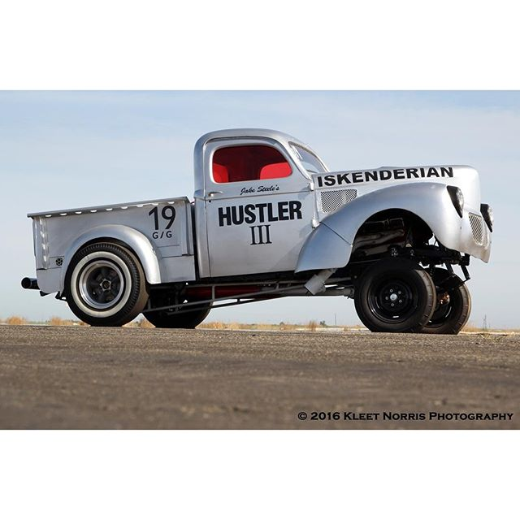

1931 Model A:

- A period-perfect representation of a true 1930's hot rod with a 5" chop
- 3" dropped axle in the front, split wish bones
- model a block, bored .040 over
- Stromberg 97 downdraft carburetor & pressurized fuel system
- custom exhaust manifold mated to a baffled torque-tube exhaust
1936 Ford Coupe:

- A traditionally styled mild custom car, completed to accurately reflect a late 1950's era custom
- lowered 8" in the rear, 4" in the front
- one piece molded rear fenders
- shaved cowl, door lock cylinders and filled roof
- early small block Chevrolet powered
- three Stromberg carburetors
1940 Willys:

- Built to emulate a 1960's drag race car, known as a "gasser". Period correct, featuring parts of the era"
- chevrolet 350CI engine, bored .060 over, ported, polished and relieved block
- Muncie M21 close-ratio 4 speed manual transmission
- ford 9" rear end, spooled
- bed shortened 12", lightened
- custom exhaust featuring removable header caps